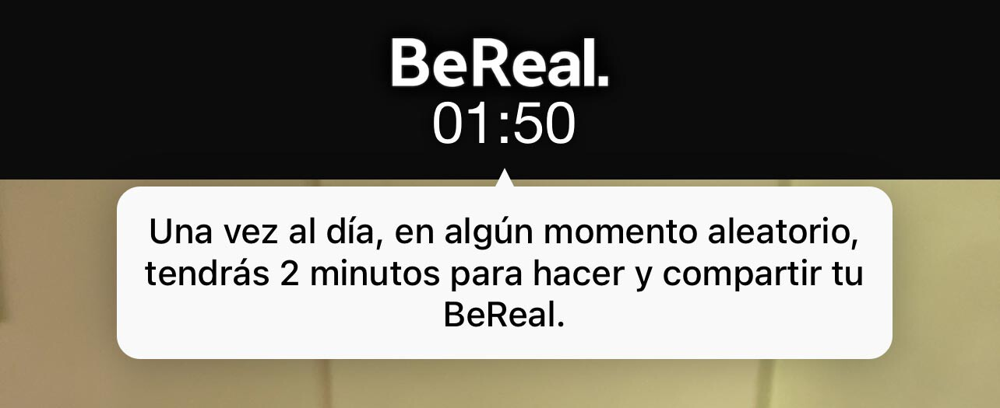
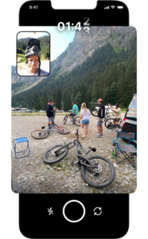

¿Qué es?

¿Como funciona?
Los usuarios reciben una notificación al azar una vez al día que dice: "Time to BeReal". Esto le da al usuario un plazo de dos minutos para publicar una foto de lo que está haciendo en ese momento. El objetivo es capturar una instantánea auténtica y sin filtros de la vida del usuario.
Características
- No se puede compartir contenido cuando se desea, sólo cuando lo manda la app.
- Cada día Be.Real. envía una notificación a los usuarios para que hagan una foto (con la cámara trasera y delantera de forma simultánea).
- Una vez recibida la notificación todos los usuarios tienen dos minutos para hacer su foto. Pasado ese tiempo la oportunidad se esfuma.
- La foto puede ir o no geolocalizada. Además, cada usuario tiene la opción de dejarla como privada (sólo pueden verla sus amigos) o como pública (entra en el denominado como Discover, una sección visible por cualquiera registrado en la app).
- Una vez subida la imagen todos los contactos de BeReal. pueden ver lo que subieron sus amigos, también resulta posible comentarlo.
- Las fotos se borran cada día, una vez llega el turno de crear una nueva foto.